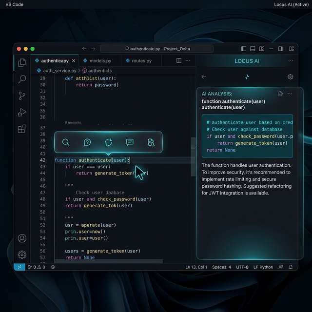

Highlight any text on your screen. Locus appears instantly — no app switching, no copy-paste, no context lost. Blueprint, explain, teach, or deep-dive. All with your own models.

function authenticate(user)
Highlight text anywhere. Locus reads your selection and routes it to the right mode automatically — or you choose.
Turn highlighted descriptions, requirements, or ideas into full technical blueprints — architecture, file manifest, data models, build order.
Highlight any concept, code snippet, or paragraph. Locus explains it from first principles, calibrating depth to your level.
Expands on any Teach Me response. Opens a connected south panel that digs into edge cases, tradeoffs, and related concepts.
A persistent terminal tab inside the companion panel. Run commands and get AI analysis of their output without leaving the overlay.
Select any text on your screen — code, docs, a PDF, a webpage, a terminal. The Locus toolbar appears at your cursor within 60ms.
Click Blueprint, Explain, Teach Me, or Deep Dive. Or let Locus auto-detect — it recognises code vs. prose vs. error messages.
Locus streams the response in a glass panel alongside your screen. No window. No app switch. No lost context. Copy, pin, or export with one click.
The companion panel snaps to the right of the main overlay and stays open. Switch between Blueprint, Teach, Dive, and Terminal tabs without losing your thread.
def authenticate(user, password):
Locus never sends your text to a cloud unless you choose to. Run fully local with Ollama. Or connect your own OpenAI, Anthropic, or Gemini keys.
100% local. Zero latency. Zero cost. Runs any model you have pulled — Llama, Mistral, Qwen, Phi.
LocalGPT-4o, GPT-4, GPT-3.5. Bring your own key — Locus stores it locally in your config file.
CloudClaude 3.5 Sonnet, Haiku, Opus. Exceptional at long context, analysis, and teaching.
CloudPoint at any local or remote OpenAI-compatible endpoint. LM Studio, Groq, Together, and more.
FlexibleThe core experience is free forever. Pro unlocks persistent memory and team features.
No switching tabs. No copy-paste. No subscriptions for basic use.
Just highlight and ask.